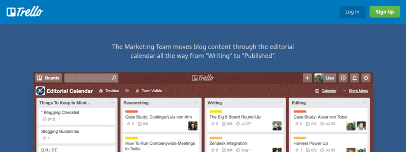
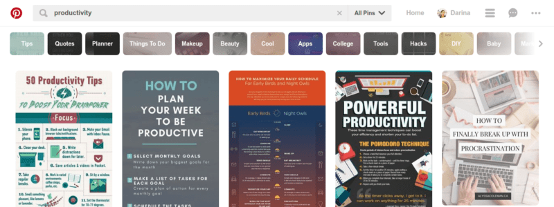
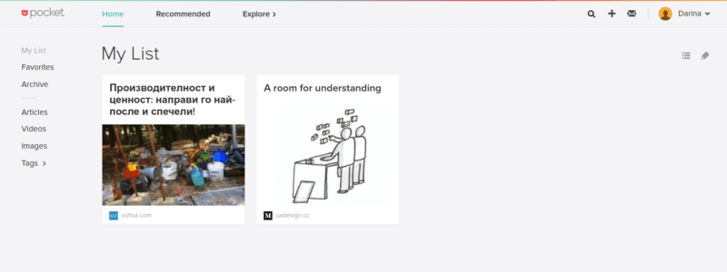
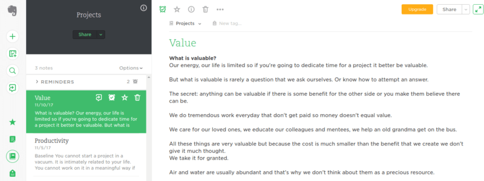
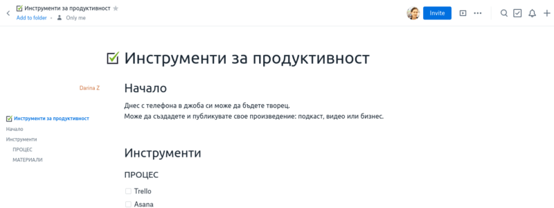
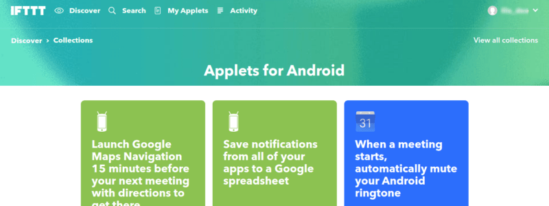
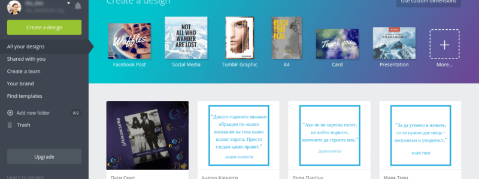
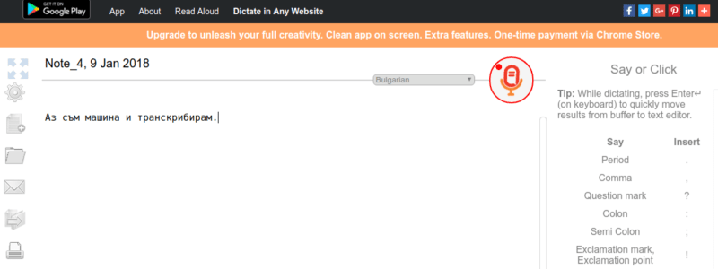
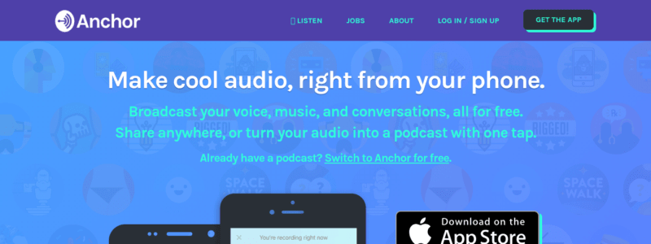

Инструменти за продуктивност
Казват, че стига да имаш идея, ще намериш начин.
Но аз смятам, че да видиш какво е възможно, е по- ефективно и вдъхновяващо.
Затова ви представям няколко инструмента за да планирате и публикувате свое произведение, било то подкаст, видео или бизнес.
Те ще ви помогнат както в работата, така и ако се замисляте за странични занимания.
ПРОЦЕС И ОРГАНИЗАЦИЯ: Trello/ Asana
Ако сте се заинтересували от японските системи, със сигурност се попадали на канбан. Trello следва принципите ѝ. Основният замисъл се състои в това да придвижвате задачите си от идея до завършена.
Предимството е, че виждате всичко с един поглед. А и знаете точно какво следва. Може да използвате Trello да следите по какво работите, вместо календар или за съвместни проекти.
Особено ако си сътрудничите по проект или искате да имате едно място, където вие и/или клиентите ви могат да следят прогреса на даден проект, най- подходящо е да ползвате Asana.
След като зададете график и стъпки, този сайт ви позволява да добавяте нови задачи, да отмятате свършеното и да изпращате напомняния. Ще ви е полезно независимо дали организирате процеса си или за да предлагате услуги настрани.
Ако пък сте готови да се разделите с някакви пари, пробвайте Basecamp.
МАТЕРИАЛИ: Pocket / Pinterest
Обикновено мислим за Pinterest като за място да разглеждаме разкошни рокли или вкусни рецепти, но там има всякакви теми, а може и лесно да добавяте свои линкове. Направете си дъска (board), където да запазвате всичко свързано с проекта, по който работите.
Друг начин да запазвате статии е като инсталирате разширение на браузъра за четене после, което се казва Pocket. Запазеното може да се синхронизира с приложението им на телефона. Статиите са налични и офлайн и са чудесно запълване на времето докато пътувате в градския транспорт.
БЕЛЕЖКИ: Evernote / OneNote
Ако освен да запазвате източници, ви трябва да добавяте своите бележки, често срещан вариант е да ползвате Evernote. Освен да достъпвате запазено на сайта им, имат приложение, което да инсталирате на лаптопа си. За да си запазвате четиво пък си сложете разширението за браузър Clipper.
За Windows пък OneNote е страхотна подобна опция.
И в двете приложения може да си организирате всичко в бележници.
ДОКУМЕНТИ: Google Docs / Dropbox Paper
В Google Docs имате възможност да създавате документи, таблици и презентации, които са достъпни отвсякъде.
Ако имате акаунт за gmail, youtube или някоя от другите услуги на гиганта, по всяка вероятност вече имате регистрация.
В Dropbox Paper лесно може да създавате документи със снимки, чекбокс и линкове. Дизайнът е минималистичен със сладки илюстрации.
Документите, запазени на тези места са налични на всяко устройство, така че може да поработвате по страничния си проект докато чакате на опашката примерно.
ФАЙЛОВЕ: Dropbox / DOX
Щом ви се наложи да споделяте файл, който не е необходимо да се променя от получателя, пощата на abv си идва с включено дигитално място за съхранение- Dox. Сещайте се!
Разбира се, общоприетото цифрово хранилище в последно време е Dropbox. Плюс да пращате информация, там може да си пазите частни файлове.
ОБЩНОСТ: Slack / Facebook Groups
Според една африканска поговорка "Ако искаш да стигнеш бързо, върви сам. Ако искаш да стигнеш далече, върви с някого."
Така че, ако имате нужда от хора, които да ви подкрепят или развличат, ако търсите сродни по интереси хора или ви трябва помощ при организирането на срещи или събития, протегнете ръка.
Може да ползвате или възможността за създаване на групи във Facebook или набиращия популярност чат канал с екстри Slack. Там записването става с имейл.
АВТОМАТИЗАЦИЯ: IFTTT / Zapier
Убедена съм, че все повече в ежедневието ни ще навлиза автоматизацията. И двете приложения IFTTT (If This Then That) и Zapier предлагат възможност да свързвате две или повече приложения. Също може да карате нещо да се случи след някакъв спусък. А Zapier има и страхотен блог за продуктивност.
ГРАФИКИ: Canva
В комуникацията ни все повече навлиза дизайна.
Не е достатъчно да го напишеш, а трябва да е добре оформено, красиво и четимо.
Независимо дали става дума за презентации, покани, доклади, брошури, дори списание, Canva има темплейти, които правят дизайна почти лесен.
Може и да не разбирате от тази област, но към сайта има училище, където ще ви предадат бързо и забавно основите принципи, за да може графиките ви да се открояват.
ПИСАНЕ: ZenPen / FocusWriter
Всички знаем, че Word има безброй възможности, опции и украшения.
Но понякога ни трябва просто среда без разсейване, където да излеем идеите си на белия лист, както се казва.
Да кажем, че сте събрали източниците и мислите си и остава само да напечатате текста. Тук на помощ идват ZenPen или FocusWriter- едното е онлайн приложение, а другото програмка, която може да инсталирате.
Да ползваш ZenPen е фасулска работа, а FocusWriter ви дава повече възможности за персонализация и задаване на цели, а също при желание да се чувствате ретро със звуци на печатна машина.
И при двете може да си поставяте предизвикателства: за време или думи.
ТРАНСКРИБИРАНЕ: Speechnotes
Искате да пишете повече, но ви мързи да цъкате по клавиатурата.
Тогава Speechnotes в точно за вас.  Сайта/ приложението слуша какво казвате и печата думите на екрана. После трябва да добавите пунктуация, но си е съвсем друго да редактирате, а не да измисляте и пишете едновременно.
Има го и на български език.
Само натиснете микрофончето и говорете!
С невероятния технологичен напредък, машините вече познават по- добре от хората речта ви. Нормалната човешка грешка обикновено е 6%, а при повечето днешни софтуери- 4%.
Пробвайте и се изумете лично!
ВИДЕОЗАПИС: Open Broadcaster Software / Soapbox
Да запишете екрана си вече не е предизвикателство.
OBS Studio е безплатен софтуер с отворен код, който е създаден за геймъри, но може да ползвате да запишете екрана си плюс допълнително аудио.
Soapbox пък е творение на видео хостинг платформата Wistia. Разширението за Chrome ви позволява да записвате едновременно екрана и лицето си. Имате право на три безплатни видеа с лого и без да може да ги свалите, ако не сте на платен план, но пък може да се редактират и споделят.
Ако бихте се задоволили с нещо по- непосредствено Periscope и Google Hangouts вършат работата.
АУДИО: Audacity, Soundcloud, anchor.fm
Микрофонът в смартфона ви става все по- мощен. Какво следва след като се запишете. Да редактирате гласа си било то за подкаст или за песен става за две- три минути и в youtube има сума ти уроци как става с безплатната програма Audacity.
След като сте доволни от резултата може да споделите аудио файла си в платформата Soundcloud или да си инсталирате приложението anchor. Лесно!
СЕСИИ И Т.Н.: Fokasu, Momentum
Учени са открили, че най- добрия и продуктивен ритъм бил 52 минути работа и 17 минути почивка. На тази идея се базира разширението за браузър Fokasu.
Ако пък сте виждали красивите нови подраздели с часовник и задача, върху която да се фокусираш, най- вероятно притежателят на компютъра има инсталиран Momentum.
Засега това са всички инструменти, които искам да ви представя.
Ще пробвате ли някой?
Ако сте надъхани да сте по- продуктивни тази година, изградете си стратегиякато разберете и приложите разликата между производителност и ценност (+ няколко съвета как да организирате работата си).